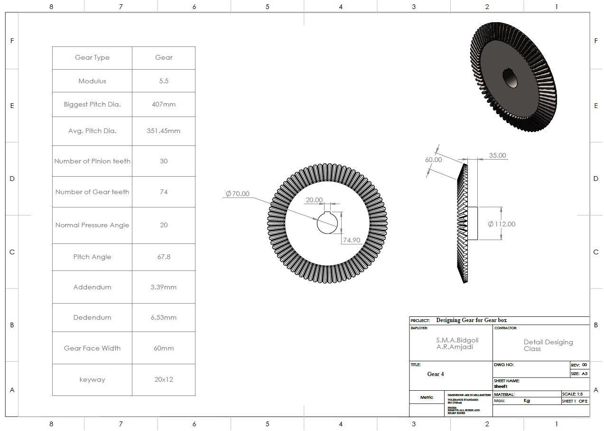
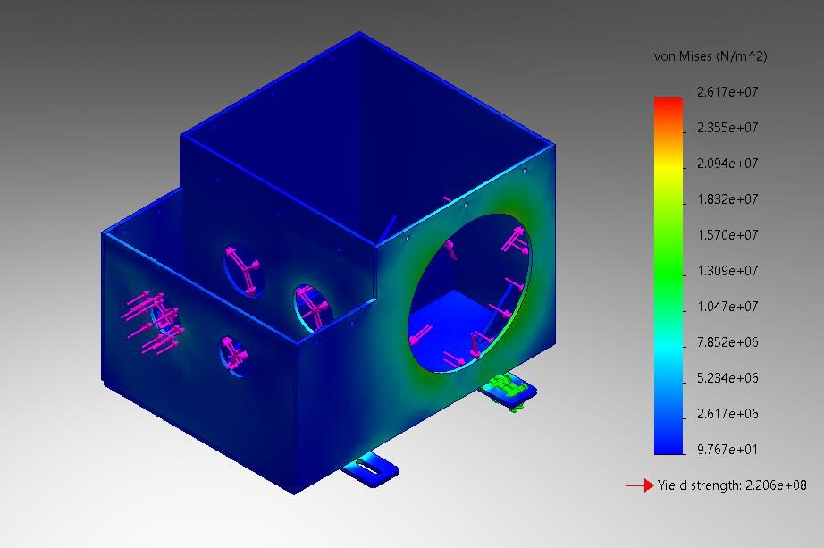
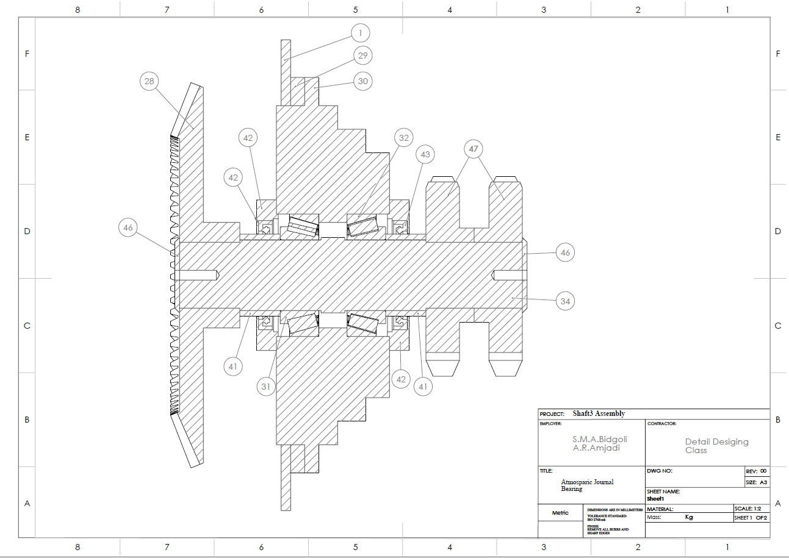

06Machine Design
Gearbox: Gear Design
Helical and straight bevel gears designed against bending and surface fatigue, followed by the final shafts, bearings, housing lubrication details, FEA, manufacturing methods and cost.
Overview
Design the two gear stages of the gearbox for infinite life with a safety factor of at least 2 in a mining environment, and finalise the shafts, bearings and housing with the final gear dimensions.
Approach
- Spur and helical designs of the first stage compared in bending and surface strength; the helical pair gives smaller gears and is selected.
- Module of the straight bevel stage found by trial and error from the bending and surface relations.
- Shafts and bearings recalculated with the final gear forces.
- Housing revised for the oil level and drainage, then re-checked by FEA; manufacturing steps and cost.
Results
| Bearings, SKF adjusted life | all six above the required life (e.g. B6: 178.7 vs 168 Mrev) |
|---|---|
| Housing, SolidWorks FEA with a refined mesh | 26.2 MPa vs 220.6 MPa; 0.046 mm vs 0.1 mm |
| G1 / G2 | helical, N = 19 / 56, m_n = 5.25 mm, d = 102.4 / 302 mm |
| G3 / G4 | straight bevel, N = 30 / 74, m = 5.5 mm |
| Gear material | 34CrMo4, H_B 310–340 |
| Gears cost | 55,350,000 tomans |
From the report





